The model, in a paragraph.
The core is a 4-level U-Net operating on 4-channel VAE latents of
the AFHQ 512² animal-faces dataset (~15 k images across cat, dog,
and wild) — encoded once with Stability's
sd-vae-ft-mse, cached to disk, then trained with
epsilon-prediction MSE and a cosine schedule at T = 1000. Attention
lives at the two deeper resolutions and through the bottleneck;
the top level stays convolutional. bfloat16 mixed precision is used
everywhere it can be, and the sampler is EMA-averaged with
decay 0.9999.
Everything below is the same model at rest — different sampler choices, different noise seeds, different guidance scales. The architecture page walks through the how.
AFHQ 512²: cat, dog, wild.
AFHQ (Animal Faces HQ, Choi et al. 2020) is a small, curated corpus of 15,803 tightly-cropped animal-face photographs at 512×512 resolution, released alongside StarGAN v2 as a cleaner alternative to CelebA for image-generation research. It's partitioned into three balanced classes: cat, dog, and wild (a mix of big cats, wolves, and foxes).
The combination — small size, high fidelity, three visually distinct classes — makes AFHQ a natural fit for a from-scratch class-conditional diffusion model. Training to a strong result fits on a single GPU, and the three-class structure gives classifier-free guidance something concrete to steer.
Figure 1
Real AFHQ samples.
Twelve real images from the validation split — four per class (cat / dog / wild). Random seeds, no filtering.
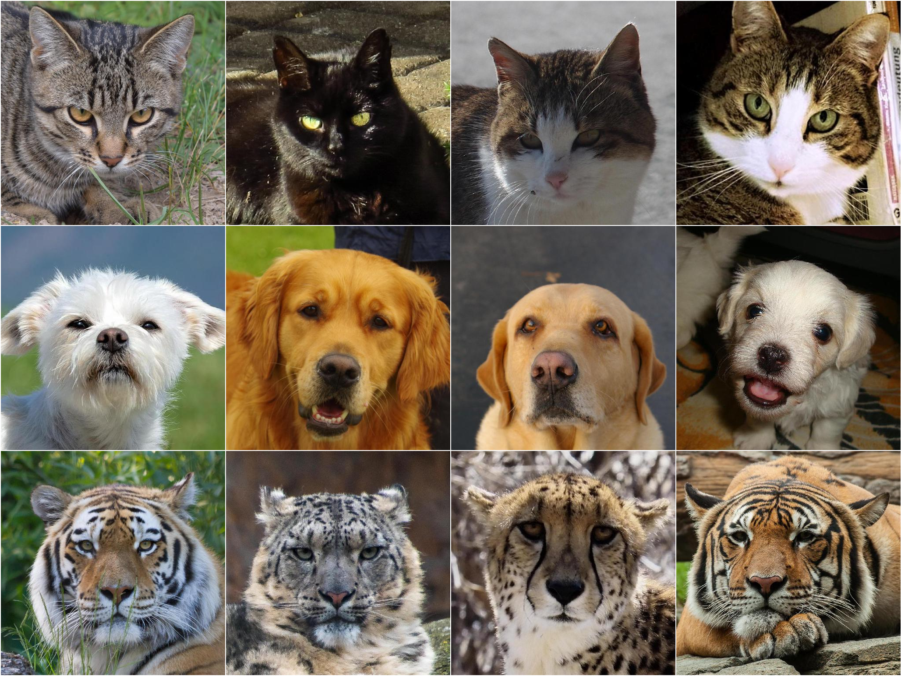
Class-conditional samples.
Three rows, eight seeds each, sampled at CFG = 3 with 30 steps of
DPM-Solver++ (2M). No cherry-picking; these are consecutive seeds
from the same call. The row structure comes from the class embedding
— a small nn.Embedding(4, 256) table that gets
added into the time embedding before every ResBlock's normalization.
Row identity, seed pose.
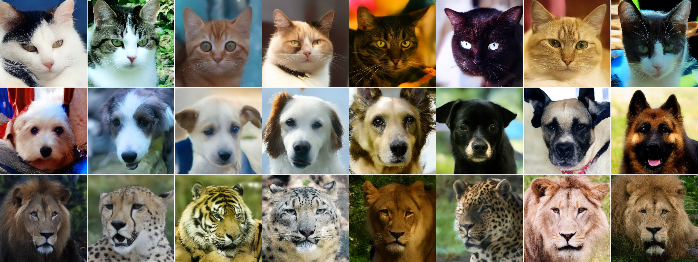
Figure 2
Rows: cat, dog, wild. Columns: eight independent noise seeds. No prompt engineering — the model is class-conditional with a 4-row embedding table and CFG scale 3.
When the initial noise is held constant across the three classes, you can see how much of the "pose" comes from the seed and how much of the "identity" comes from the class embedding.
Figure 3
Same noise, three classes.
One initial x_T, three different class conditions.
Framing and lighting come from the noise; the species from the
class embedding.
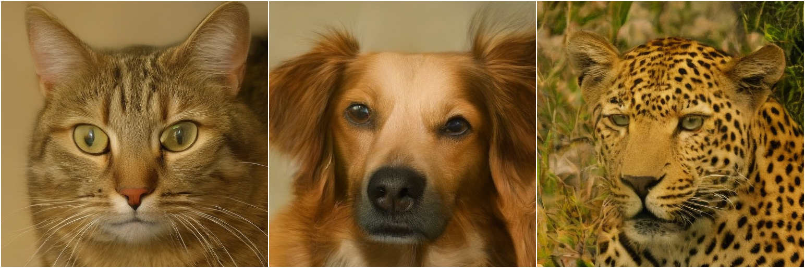
Same model, many samplers.
The training objective doesn't care how you reverse the noising process at inference. The same trained epsilon model can be sampled as DDPM, DDIM, or any DPM-Solver variant — each is a different numerical scheme applied to the probability-flow ODE. The three panels below sweep the knobs.
Figure 4
DDPM ↔ DDIM: η sweep.
Columns: η ∈ 0.0 – 1.0 in six stops. η = 0 is deterministic DDIM; η = 1 recovers DDPM's stochastic Markov chain. Same seed per row.
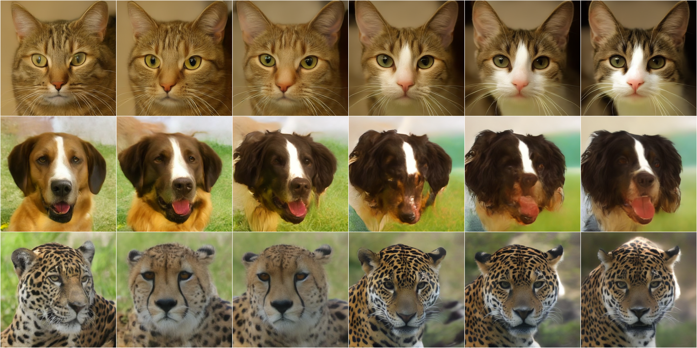
What η actually controls. η is the "how much fresh random noise the sampler injects at each step" knob. At η = 0 (DDIM) the sampler is fully deterministic — fix the starting noise and you get the same image every run. At η = 1 (DDPM) fresh noise is added at every step, so two runs with the same starting seed diverge into different images of similar quality.
Why the rows still look nearly identical: at 100 steps the per-step noise injection is small enough that the model absorbs it. The visible difference between η values is in reproducibility and per-sample diversity, not in per-sample fidelity.
Figure 5
DDIM step-count.
Columns: n_steps ∈ {10, 20, 50, 100, 500, 1000}. 50 steps is essentially indistinguishable from 1000; below 20 things begin to fray.
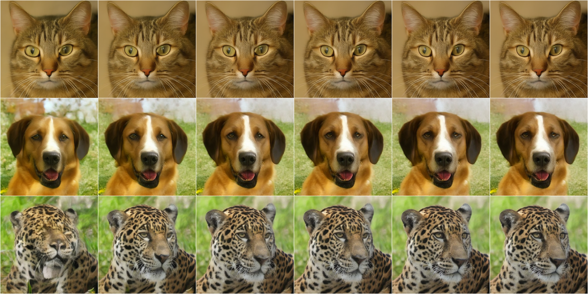
Figure 6
DPM-Solver++ order sweep.
Two-dimensional sweep. Rows: multistep order. Columns: n_steps. Higher order helps up to about 3; beyond that Adams–Bashforth coefficient magnitudes grow and quality plateaus or degrades — the empirical diminishing-returns story.
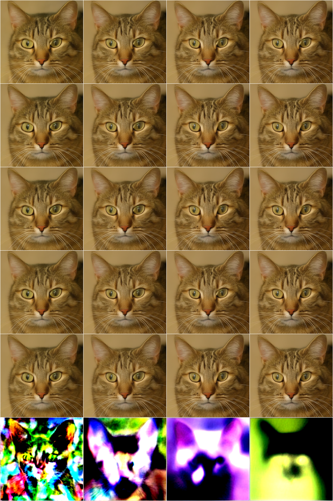
On row 10. Rows 2 through 5 look identical because the denoiser is error-correcting — each step pulls the latent back to the data manifold, absorbing small solver errors. Order 10 crosses out of that regime: its Adams‑Bashforth weights sum to ~300 in magnitude, and that amplification pushes the latent outside the VAE decoder's training distribution. The neon is the decoder saturating.
Neither more steps nor a different timestep spacing saves it — the only real lever is order itself. The DPM-Solver++ paper caps at 3 for this reason.
Guidance and the noise space.
Classifier-free guidance mixes the model's conditional and unconditional epsilon predictions to steer samples toward more prototypical class exemplars. Pushed too hard, the same knob oversaturates colors and locks poses.
Figure 7
CFG scale sweep.
Drag the slider to sweep the guidance scale from 1 (no guidance) through 10 (heavy oversaturation). Each stop shows all three classes side-by-side, same seed throughout.
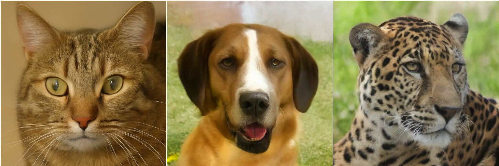
What CFG actually does. During training, 10% of
samples had their class label dropped to a "null" class
(uncond_prob = 0.1). That taught the model two
predictions at once: one conditional on the class, one
unconditional. At sample time both get computed and mixed:
ε = ε_uncond + w · (ε_cond − ε_uncond).
w = 1 is pure conditional (no guidance nudge). w > 1 extrapolates in the "make it more clearly this class" direction — small values sharpen class features cleanly, large values overshoot into oversaturated colors and locked poses. There's no correct w: low is more faithful to the training distribution, high is more visually punchy at the cost of realism.
With a class held fixed, the initial-noise manifold is smooth — spherically-interpolating between two seeds walks the sampler through a continuous morph of the same animal.
Figure 8
Noise SLERP.
Fix the class, spherical-LERP between two random noise seeds over eight stops. Drag the slider to walk α from 0 to 1.
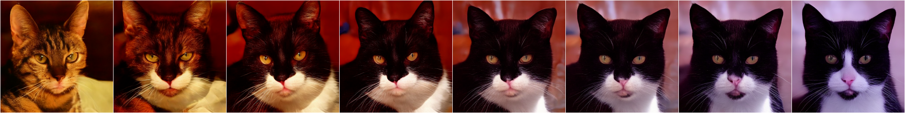
What you're seeing. Two random noise samples A
and B are drawn from N(0, I). The slider walks
a parameter α from 0 to 1 that interpolates the sampler's
starting noise between them — at α = 0 the sampler
starts from A, at α = 1 from B, in between from a mixture. Class
held fixed. Same everything downstream; only the initial noise
changes.
Why "spherical" and not plain linear interpolation. The magnitude of the noise vector is what defines the starting noise level. Averaging two Gaussian vectors linearly shrinks their magnitude near the midpoint, so at α = 0.5 the sampler would start from an unusually-clean latent it was never trained to denoise. Spherical LERP walks along the sphere of constant magnitude, so every interpolated noise has the same "size" as A and B, staying inside the model's training distribution.
The takeaway is that noise space is smooth: two random noises produce two different animals of the same class; interpolating between the noises interpolates continuously between those animals, without ever producing a broken sample. The whole strip is one continuous manifold.
SDEdit: noise as an edit strength.
Give the model a real image, corrupt it with noise up to timestep t, then run the reverse process from there. Small t: model tweaks. Large t: the original barely survives — closer to generating from scratch than editing.
Figure 9
SDEdit.
Rows: one real AFHQ input per class. Columns: original, then paired (noised at t, denoised from t) for t ∈ {250, 500, 750}.
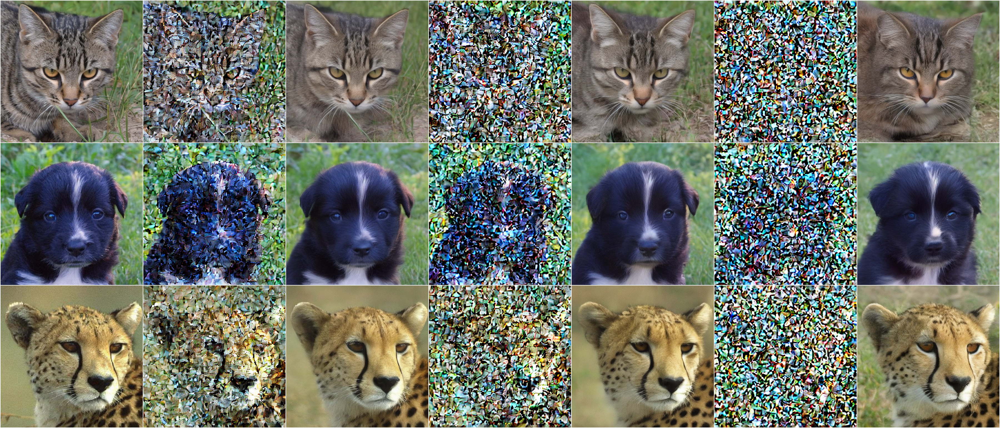
The reverse process, in pictures.
Sampling is a walk from pure noise back to data along a schedule of
log signal-to-noise ratios. Two views of the same walk: the raw
latent x_t, and the model's implicit best guess of the
clean image at each step, x_0 = (x_t − σ·ε) / α.
Figure 10
Trajectory & x_0 refinement.
Two views of the same sampling run, column-aligned by
timestep. Top: the raw noisy latent x_t the
sampler is carrying. Bottom: the model's own guess of what
the clean image is at each of those steps.
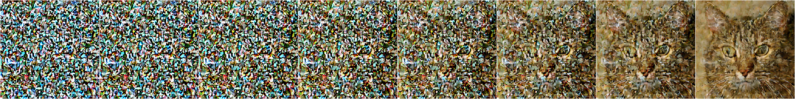
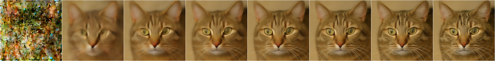
How the two rows relate. Same eight timesteps,
same seed. The top row is what the sampler is holding at that
moment — a partially-noised latent. The bottom row is what
the model predicts the clean version to be, given that
input: x̂₀ = (x_t − σ_t · ε̂) / α_t.
Each column of the bottom row is exactly what the model
was trained to do — given a noisy sample at some noise
level, predict the clean version. Sampling is nothing more than
chaining those single-step predictions together: each step's
x̂₀ is used by the sampler to compute the next
step's x_t, and around we go.
Figure 11
Noise schedule.
Cosine schedule with sched_min = 0.02,
sched_max = 0.95. α does not reach 1 at t = 0,
which is why the sampler returns the final x_0
prediction instead of x_t. Hover the curves for
exact values.
α(t), σ(t) & log SNR(t)
How good is it, actually?
FID (Fréchet Inception Distance) is the field standard for measuring how close a generator's output distribution is to a reference distribution — here, the AFHQ training set. Lower is better; a few points of gap is real.
Hover any chart to inspect exact values.
Figure 12
FID across training.
20 checkpoints, one FID measurement each at N = 10,000 samples. Warm-up region shaded; winner called out.
FID across 20 training checkpoints
Figure 13
FID vs sample count.
FID at small N is biased and noisy. Every checkpoint here was measured at N = 500, 1 k, 2 k, 5 k, 10 k — the curves flatten by 5 k. Highlighted lines are representative checkpoints; the gray backdrop is every other checkpoint.
FID vs sample count
Figure 14
Samplers vs steps.
Three samplers at five step counts. At low step counts the higher-order DPM++ variants open a gap; by 100+ steps everything converges.
FID vs sampling steps, across samplers
Figure 15
Real vs generated.
Each row: real AFHQ validation images on the left half, model generations on the right. The ground-truth check.
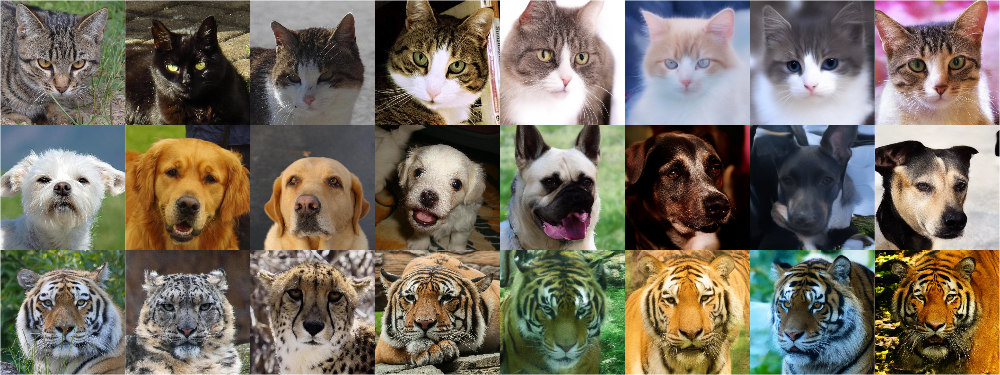
Under the hood.
The full architecture — UNet block topology, the training loop, the sampler math, design decisions, and a config reference — lives in a companion page.